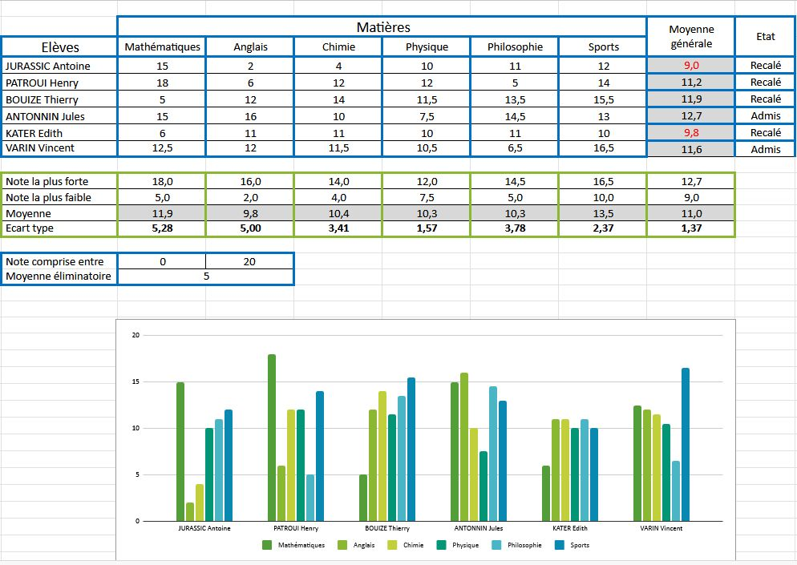
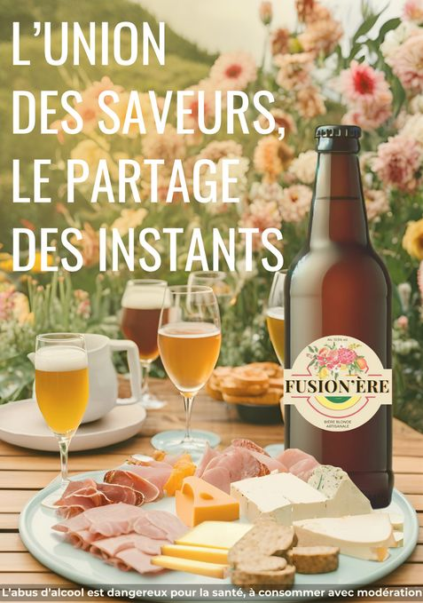
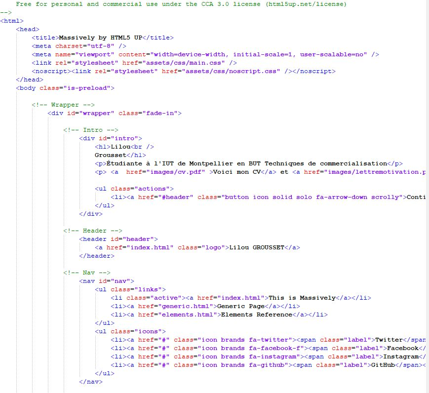

J’utilise régulièrement Excel dans mes études et mes projets, notamment pour organiser des données, réaliser des calculs automatisés, créer des tableaux structurés et produire des graphiques clairs et lisibles. L’exemple ci-dessous illustre ma capacité à analyser un ensemble de notes, calculer les moyennes, les écarts types, et mettre en forme les résultats de manière professionnelle. Je maîtrise également les mises en forme conditionnelles, les formules de calcul et la création de graphiques adaptés aux besoins.

Pendant mes études, j’ai eu l’occasion de créer une affiche publicitaire sur Canva dans le cadre d’un projet marketing. Ce travail m’a permis de mettre en pratique mes compétences en communication visuelle et en marketing tout en développant ma créativité. J’ai choisi les couleurs, les typographies et les images afin de transmettre efficacement le message et de capter l’attention du public cible.
Ce projet m’a également appris à structurer un message de manière claire et attractive, à respecter une identité visuelle et à tenir compte des retours constructifs de mes enseignants et camarades pour améliorer le rendu final.
Cette expérience m’a apporté confiance et autonomie dans la création de supports publicitaires et m’a permis de mieux maîtriser des outils digitaux comme Canva, essentiels dans le domaine du marketing et de la communication.

Sur GIMP, je maîtrise les bases indispensables de la création graphique : travail avec les calques, utilisation des masques de fusion, retouches photo, correction colorimétrique et détourage précis. J’utilise régulièrement les outils de transformation, les effets de lumière, ainsi que les réglages de courbes et de niveaux pour obtenir un rendu propre et harmonieux. J’aime également expérimenter avec les textures, les filtres et la typographie pour créer des visuels originaux. Grâce à GIMP, je peux réaliser aussi bien des photomontages que des affiches ou des compositions plus artistiques tout en gardant une cohérence graphique dans chacune de mes créations.
Mes compétences en HTML et CSS

Je sais utiliser HTML et CSS pour créer des pages web complètes et structurées. Avec HTML, je peux intégrer différents éléments comme des images, des liens, des titres, des paragraphes, des listes ou encore des boutons. Je sais organiser une page en plusieurs sections pour rendre le contenu clair et facile à lire.
Avec le CSS, je mets en forme tout ce contenu : choix des couleurs, gestion des polices, ajustement des tailles, alignement des éléments ou ajout de bordures et d’arrières-plans. Cela me permet de donner un style plus propre et plus agréable aux pages que je crée.
Grâce à ces compétences, je suis capable de réaliser de petits sites internet, de présenter des projets de manière soignée et d’adapter l’apparence d’une page selon l’objectif recherché. Ce sont les bases qui me permettent de continuer à progresser dans le développement web.